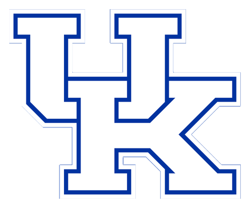
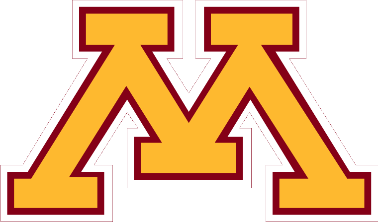
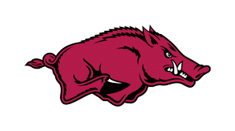

NCAA 180 Postseason
Projection after week 10 · not official · updates every Tuesday until selection
How the projection works
Odds (impactful games, playoff odds, the full table): the rest of the season, the conference championships and the playoff are simulated 10,000 times — this week from the Tuesday projections, later weeks from each team's scoring so far — and the real selection rules run on every one. "Clinched" and "Out" appear only when no result can change them.
Most likely field and bowls: every remaining regular-season game (weeks 11–11) and every conference championship game goes to the team with the higher season scoring average. Then the real postseason rules run on those results: conference champions get automatic bids (AQ), at-large spots go by record and the tiebreakers, and bowl teams are ordered by poll rank adjusted for wins (25 poll spots per win). Projected seeds use the latest poll, adjusted for projected wins and losses; the real seeds come from the bots' seeding ballot after championship week. Marquee Bowls give each league a seat (the better of its two division leaders still available), then fill by bowl order. Records shown are projected final records.
Most impactful games week 11
Each team's odds with a loss (left) and with a win (right); +N = how many points the win is worth. The 15 biggest swings, then the biggest in each conference not listed yet (5+ points).
Playoff
One per conference
Bowl bowl or playoff
One per conference
Playoff odds 10,000 simulated seasons
Locks 99%+ · Likely 75–99% · Bubble 25–75% · Long shots 5–25%. "Clinched" only when no result can change it.
Locks 10
Likely 10
Bubble 23
Long shots 7
Most likely playoff field first round
AQ = projected conference champion (15 auto bids); the rest are at-large. Projected seeds: week-10 poll, adjusted for projected wins and losses.





On the bubble
Last 4 in
First 4 out




Projection, not official · 2026 after week 10 · weeks 11–11 + CCG projected (each team scores its season average)
Prestige Bowls week 16
Top of the bowl order.

Citrus BowlOrlando, FL

Sun BowlEl Paso, TX


Gator BowlJacksonville, FL


Liberty BowlMemphis, TN


Alamo BowlSan Antonio, TX


Projection, not official · 2026 after week 10 · weeks 11–11 + CCG projected (each team scores its season average)
Marquee Bowls week 15
One seat per league (its better division leader still available), then at-large by bowl order; placed by tie-ins.

Tangerine BowlOrlando, FL


Independence BowlShreveport, LA


New Orleans BowlNew Orleans, LA


Holiday BowlSan Diego, CA


Music City BowlNashville, TN


Aloha BowlHonolulu, HI


Gasparilla BowlTampa, FL


Celebration BowlAtlanta, GA


Projection, not official · 2026 after week 10 · weeks 11–11 + CCG projected (each team scores its season average)
Other teams projected to go bowling 34 teams
Bowls and opponents for these teams are drawn at random after selection. Listed in bowl order.





Full odds table 180 teams
Playoff + Bowl + NIT = 100% for every team. NIT shows — once a team has 6 wins (bowl eligible). Tap a column to sort.
| Team | |||||||
|---|---|---|---|---|---|---|---|
| Washington StatePac-12 · 10-0 | Clinched | Clinched | Out | Out | Out | — | 7% |
| IowaBig Ten · 9-1 | Clinched | >99% | <1% | <1% | <1% | — | 6% |
| ClemsonACC · 9-1 | >99% | >99% | <1% | <1% | <1% | — | 5% |
| Middle Tennessee StateCUSA · 10-0 | Clinched | Clinched | Out | Out | Out | — | 4% |
| ColoradoPac-12 · 9-1 | 92% | >99% | <1% | <1% | <1% | — | 4% |
| Youngstown StateBig Sky · 9-1 | Clinched | >99% | <1% | <1% | <1% | — | 3% |
| CampbellPioneer · 9-1 | >99% | >99% | <1% | <1% | <1% | — | 3% |
| KentuckySEC · 9-1 | Clinched | >99% | <1% | <1% | <1% | — | 3% |
| Old DominionWild · 9-1 | >99% | >99% | <1% | <1% | <1% | — | 3% |
| UNLVMountain West · 9-1 | 92% | >99% | <1% | <1% | <1% | — | 2% |
| BaylorBig 12 · 8-2 | >99% | 97% | 3% | 3% | <1% | — | 7% |
| Arizona StatePac-12 · 8-2 | 8% | 95% | 5% | 5% | <1% | — | 5% |
| William & MaryBig Sky · 8-2 | Clinched | 93% | 7% | 7% | <1% | — | 5% |
| HawaiiMountain West · 8-2 | 8% | 91% | 9% | 9% | <1% | — | 6% |
| BYUMountain West · 8-2 | Clinched | 90% | 10% | 10% | <1% | — | 3% |
| BrownIvy · 8-2 | 78% | 90% | 10% | 10% | <1% | — | 5% |
| Southern MissSun Belt · 8-2 | Clinched | 89% | 11% | 11% | <1% | — | 2% |
| SyracuseBig East · 8-2 | 62% | 84% | 16% | 16% | <1% | — | 4% |
| SouthernHBCU · 8-2 | >99% | 81% | 19% | 19% | <1% | — | 1% |
| ArmyBig East · 8-2 | 38% | 75% | 25% | 4% | 19% | — | <1% |
| Kansas StateBig 12 · 8-2 | 82% | 74% | 26% | 26% | <1% | — | 2% |
| TulsaSun Belt · 8-2 | 56% | 72% | 28% | 28% | <1% | — | 1% |
| GeorgetownIvy · 7-3 | 8% | 70% | 30% | 18% | 13% | — | 3% |
| MemphisSun Belt · 8-2 | 28% | 67% | 33% | 32% | 2% | — | 1% |
| LSUSEC · 8-2 | 68% | 65% | 35% | 29% | 6% | — | <1% |
| CornellIvy · 8-2 | Clinched | 63% | 37% | 37% | <1% | — | <1% |
| TempleSun Belt · 8-2 | 16% | 62% | 38% | 34% | 4% | — | 1% |
| UNC CharlotteWild · 8-2 | <1% | 59% | 41% | 27% | 14% | — | <1% |
| NC StateACC · 8-2 | <1% | 58% | 42% | 42% | <1% | — | 1% |
| DartmouthIvy · 8-2 | 13% | 58% | 42% | 42% | <1% | — | 1% |
| North Carolina A&THBCU · 7-3 | >99% | 56% | 44% | 35% | 9% | — | 1% |
| MontanaWild · 6-4 | >99% | 53% | 47% | <1% | 32% | — | 2% |
| MonmouthOhio Valley · 8-2 | Clinched | 52% | 48% | 2% | 13% | — | <1% |
| ETSUOhio Valley · 7-3 | 50% | 47% | 53% | 45% | 8% | — | 1% |
| Coastal CarolinaBig East · 7-3 | 58% | 45% | 55% | 7% | 18% | — | 2% |
| MissouriBig 12 · 8-2 | 18% | 45% | 55% | 2% | 42% | — | <1% |
| DavidsonPioneer · 8-2 | <1% | 44% | 56% | 12% | 42% | — | <1% |
| MinnesotaBig Ten · 7-3 | Out | 42% | 58% | 47% | 7% | — | 1% |
| UT MartinPioneer · 7-3 | Clinched | 39% | 61% | 8% | 38% | — | <1% |
| Portland StateBig Sky · 7-3 | Out | 36% | 64% | 57% | 6% | — | 2% |
| BelmontOhio Valley · 8-2 | 36% | 33% | 67% | 1% | 40% | — | <1% |
| Georgia TechACC · 7-3 | Clinched | 32% | 68% | <1% | 67% | — | <1% |
| UCLAPac-12 · 8-2 | <1% | 30% | 70% | 36% | 34% | — | <1% |
| ChattanoogaOhio Valley · 7-3 | 14% | 19% | 81% | 48% | 11% | — | <1% |
| MichiganBig Ten · 6-4 | 54% | 19% | 81% | <1% | 9% | — | <1% |
| Texas StateCUSA · 6-4 | 70% | 17% | 83% | <1% | <1% | — | <1% |
| AuburnSEC · 7-3 | 32% | 17% | 83% | 66% | 17% | — | <1% |
| PittsburghBig East · 7-3 | 42% | 13% | 87% | <1% | 52% | — | <1% |
| South AlabamaCUSA · 5-5 | 30% | 10% | 31% | <1% | <1% | 59% | <1% |
| Ohio StateBig Ten · 6-4 | 26% | 6% | 94% | <1% | <1% | — | <1% |
| PurdueBig Ten · 6-4 | 19% | 5% | 95% | <1% | <1% | — | <1% |
| Georgia StateCUSA · 7-3 | Out | 3% | 97% | 68% | 27% | — | <1% |
| Montana StateBig Sky · 7-3 | Out | 2% | 98% | 38% | 44% | — | <1% |
| UCONNBig East · 7-3 | <1% | 1% | 99% | 40% | 26% | — | <1% |
| Fresno StateMountain West · 7-3 | Out | <1% | >99% | 62% | 38% | — | <1% |
| IllinoisBig Ten · 7-3 | Out | <1% | >99% | 1% | 62% | — | <1% |
| Texas A&MBig 12 · 7-3 | <1% | <1% | >99% | 1% | 59% | — | <1% |
| Air ForceMountain West · 1-9 | Out | Out | Out | Out | Out | >99% | Out |
| AlabamaSEC · 2-8 | Out | Out | Out | Out | Out | >99% | Out |
| Alabama A&MHBCU · 1-9 | Out | Out | Out | Out | Out | >99% | Out |
| Alcorn StateHBCU · 5-5 | Out | Out | 53% | <1% | <1% | 47% | Out |
| ArizonaPac-12 · 2-8 | Out | Out | Out | Out | Out | >99% | Out |
| ArkansasSEC · 5-5 | Out | Out | 52% | <1% | <1% | 48% | Out |
| Arkansas StateCUSA · 7-3 | Out | <1% | >99% | <1% | 91% | — | <1% |
| Austin PeayPioneer · 5-5 | Out | Out | 48% | <1% | <1% | 52% | Out |
| Bethune - CookmanHBCU · 4-6 | Out | Out | <1% | <1% | <1% | >99% | Out |
| Boise StateMountain West · 0-10 | Out | Out | Out | Out | Out | >99% | Out |
| Boston CollegeACC · 6-4 | Out | Out | >99% | <1% | 9% | — | Out |
| BucknellIvy · 3-7 | Out | Out | Out | Out | Out | >99% | Out |
| ButlerPioneer · 5-5 | Out | Out | 52% | <1% | <1% | 48% | Out |
| CaliforniaPac-12 · 3-7 | Out | Out | Out | Out | Out | >99% | Out |
| Central ArkansasWild · 2-8 | Out | Out | Out | Out | Out | >99% | Out |
| Central MichiganWild · 5-5 | Out | Out | 50% | <1% | 1% | 50% | Out |
| Charleston SouthernOhio Valley · 4-6 | Out | Out | <1% | <1% | <1% | >99% | Out |
| CitadelWild · 4-6 | Out | Out | <1% | <1% | <1% | >99% | Out |
| ColgateIvy · 5-5 | Out | Out | 76% | <1% | 47% | 24% | Out |
| Colorado StateMountain West · 6-4 | Out | Out | >99% | <1% | 62% | — | Out |
| ColumbiaIvy · 6-4 | Out | Out | >99% | <1% | 40% | — | Out |
| DaytonPioneer · 6-4 | Out | Out | >99% | <1% | 8% | — | Out |
| DelawareOhio Valley · 5-5 | Out | Out | 71% | <1% | <1% | 29% | Out |
| Delaware StateHBCU · 6-4 | <1% | <1% | >99% | <1% | <1% | — | <1% |
| DukeACC · 3-7 | Out | Out | Out | Out | Out | >99% | Out |
| Eastern KentuckyOhio Valley · 4-6 | Out | Out | <1% | <1% | <1% | >99% | Out |
| Eastern MichiganWild · 4-6 | Out | Out | <1% | <1% | <1% | >99% | Out |
| Eastern WashingtonBig Sky · 7-3 | Out | <1% | >99% | <1% | 63% | — | <1% |
| FSUACC · 6-4 | Out | Out | >99% | <1% | 24% | — | Out |
| FloridaSEC · 2-8 | Out | Out | Out | Out | Out | >99% | Out |
| Florida A&MHBCU · 5-5 | Out | Out | 80% | <1% | <1% | 20% | Out |
| Florida AtlanticCUSA · 5-5 | Out | Out | 88% | <1% | <1% | 12% | Out |
| Florida InternationalCUSA · 4-6 | Out | Out | <1% | <1% | <1% | >99% | Out |
| FurmanPioneer · 3-7 | Out | Out | Out | Out | Out | >99% | Out |
| GeorgiaSEC · 6-4 | Out | Out | >99% | <1% | 10% | — | Out |
| Georgia SouthernSun Belt · 5-5 | Out | Out | 70% | <1% | 47% | 30% | Out |
| Grambling StateHBCU · 2-8 | Out | Out | Out | Out | Out | >99% | Out |
| HarvardIvy · 3-7 | Out | Out | Out | Out | Out | >99% | Out |
| Holy CrossPioneer · 5-5 | Out | Out | 60% | <1% | 12% | 40% | Out |
| HowardHBCU · 6-4 | <1% | <1% | >99% | <1% | <1% | — | <1% |
| IndianaBig Ten · 1-9 | Out | Out | Out | Out | Out | >99% | Out |
| Iowa StateBig 12 · 3-7 | Out | Out | Out | Out | Out | >99% | Out |
| Jackson StateHBCU · 3-7 | Out | Out | Out | Out | Out | >99% | Out |
| Jacksonville StateOhio Valley · 3-7 | Out | Out | Out | Out | Out | >99% | Out |
| James MadisonWild · 7-3 | Out | <1% | >99% | 9% | 56% | — | <1% |
| KansasBig 12 · 1-9 | Out | Out | Out | Out | Out | >99% | Out |
| Kennesaw StateOhio Valley · 2-8 | Out | Out | Out | Out | Out | >99% | Out |
| LehighIvy · 2-8 | Out | Out | Out | Out | Out | >99% | Out |
| LouisianaCUSA · 1-9 | Out | Out | Out | Out | Out | >99% | Out |
| Louisiana MonroeCUSA · 4-6 | Out | Out | <1% | <1% | <1% | >99% | Out |
| Louisiana TechSun Belt · 4-6 | Out | Out | <1% | <1% | <1% | >99% | Out |
| LouisvilleACC · 3-7 | Out | Out | Out | Out | Out | >99% | Out |
| MaineBig Sky · 3-7 | Out | Out | Out | Out | Out | >99% | Out |
| MarshallSun Belt · 5-5 | Out | Out | 29% | <1% | <1% | 71% | Out |
| MarylandBig East · 3-7 | Out | Out | Out | Out | Out | >99% | Out |
| MiamiACC · 2-8 | Out | Out | Out | Out | Out | >99% | Out |
| Michigan StateBig Ten · 0-10 | Out | Out | Out | Out | Out | >99% | Out |
| Mississippi StateSEC · 5-5 | Out | Out | 86% | <1% | 3% | 14% | Out |
| Mississippi Valley StateHBCU · 6-4 | Out | Out | >99% | <1% | <1% | — | Out |
| Morehead StateOhio Valley · 2-8 | Out | Out | Out | Out | Out | >99% | Out |
| Murray StatePioneer · 5-5 | Out | Out | 64% | <1% | 4% | 36% | Out |
| NIUMountain West · 3-7 | Out | Out | Out | Out | Out | >99% | Out |
| NavyBig East · 4-6 | Out | Out | <1% | <1% | <1% | >99% | Out |
| NebraskaBig Ten · 6-4 | Out | Out | >99% | <1% | 27% | — | Out |
| NevadaMountain West · 3-7 | Out | Out | Out | Out | Out | >99% | Out |
| New MexicoMountain West · 5-5 | Out | Out | 49% | <1% | <1% | 51% | Out |
| North AlabamaOhio Valley · 6-4 | Out | Out | >99% | 7% | 58% | — | Out |
| North CarolinaACC · 3-7 | Out | Out | Out | Out | Out | >99% | Out |
| North Carolina CentralOhio Valley · 4-6 | Out | Out | <1% | <1% | <1% | >99% | Out |
| North Dakota StateWild · 3-7 | Out | Out | Out | Out | Out | >99% | Out |
| North TexasCUSA · 1-9 | Out | Out | Out | Out | Out | >99% | Out |
| Northern IowaBig Sky · 0-10 | Out | Out | Out | Out | Out | >99% | Out |
| NorthwesternBig Ten · 3-7 | Out | Out | Out | Out | Out | >99% | Out |
| Notre DameBig East · 4-6 | Out | Out | <1% | <1% | <1% | >99% | Out |
| OklahomaBig 12 · 5-5 | Out | Out | 27% | <1% | <1% | 73% | Out |
| Oklahoma StateBig 12 · 1-9 | Out | Out | Out | Out | Out | >99% | Out |
| Ole MissSEC · 2-8 | Out | Out | Out | Out | Out | >99% | Out |
| OregonPac-12 · 2-8 | Out | Out | Out | Out | Out | >99% | Out |
| Oregon StatePac-12 · 4-6 | Out | Out | 1% | <1% | <1% | 99% | Out |
| PennIvy · 5-5 | Out | Out | 47% | <1% | <1% | 53% | Out |
| Penn StateBig Ten · 4-6 | Out | Out | <1% | <1% | <1% | >99% | Out |
| PrincetonIvy · 1-9 | Out | Out | Out | Out | Out | >99% | Out |
| Rhode IslandBig Sky · 3-7 | Out | Out | Out | Out | Out | >99% | Out |
| RiceSun Belt · 1-9 | Out | Out | Out | Out | Out | >99% | Out |
| RichmondBig Sky · 5-5 | Out | Out | 26% | <1% | <1% | 74% | Out |
| RutgersBig East · 4-6 | Out | Out | <1% | <1% | <1% | >99% | Out |
| SE Missouri StatePioneer · 2-8 | Out | Out | Out | Out | Out | >99% | Out |
| San Diego StateMountain West · 4-6 | Out | Out | <1% | <1% | <1% | >99% | Out |
| San Jose StateWild · 2-8 | Out | Out | Out | Out | Out | >99% | Out |
| South CarolinaSEC · 7-3 | Out | <1% | >99% | <1% | 64% | — | <1% |
| South DakotaWild · 5-5 | <1% | <1% | 40% | <1% | 2% | 60% | <1% |
| South Dakota StateBig East · 3-7 | Out | Out | Out | Out | Out | >99% | Out |
| StanfordPac-12 · 3-7 | Out | Out | Out | Out | Out | >99% | Out |
| Stony BrookBig Sky · 5-5 | Out | Out | 67% | <1% | <1% | 33% | Out |
| TCUBig 12 · 4-6 | Out | Out | <1% | <1% | <1% | >99% | Out |
| TennesseeSEC · 4-6 | Out | Out | <1% | <1% | <1% | >99% | Out |
| Tennessee StatePioneer · 1-9 | Out | Out | Out | Out | Out | >99% | Out |
| TexasBig 12 · 6-4 | Out | Out | >99% | <1% | <1% | — | Out |
| Texas TechBig 12 · 2-8 | Out | Out | Out | Out | Out | >99% | Out |
| TroyCUSA · 5-5 | Out | Out | 75% | <1% | <1% | 25% | Out |
| TulaneSun Belt · 4-6 | Out | Out | <1% | <1% | <1% | >99% | Out |
| TuskegeeHBCU · 7-3 | <1% | <1% | >99% | <1% | 91% | — | <1% |
| UABSun Belt · 0-10 | Out | Out | Out | Out | Out | >99% | Out |
| UCFBig East · 4-6 | Out | Out | <1% | <1% | <1% | >99% | Out |
| USCPac-12 · 6-4 | Out | Out | >99% | <1% | 66% | — | Out |
| USFBig East · 1-9 | Out | Out | Out | Out | Out | >99% | Out |
| UTEPSun Belt · 3-7 | Out | Out | Out | Out | Out | >99% | Out |
| UTSASun Belt · 6-4 | Out | Out | >99% | <1% | 48% | — | Out |
| UtahPac-12 · 1-9 | Out | Out | Out | Out | Out | >99% | Out |
| VanderbiltSEC · 3-7 | Out | Out | Out | Out | Out | >99% | Out |
| VillanovaBig Sky · 6-4 | Out | Out | >99% | <1% | <1% | — | Out |
| VirginiaACC · 5-5 | Out | Out | 52% | <1% | <1% | 48% | Out |
| Virginia TechACC · 5-5 | Out | Out | 43% | <1% | <1% | 57% | Out |
| Wake ForestACC · 3-7 | Out | Out | Out | Out | Out | >99% | Out |
| WashingtonPac-12 · 4-6 | Out | Out | <1% | <1% | <1% | >99% | Out |
| Weber StateBig Sky · 0-10 | Out | Out | Out | Out | Out | >99% | Out |
| West VirginiaBig 12 · 7-3 | <1% | <1% | >99% | <1% | 7% | — | <1% |
| Western KentuckyCUSA · 5-5 | Out | Out | 61% | <1% | <1% | 39% | Out |
| Wichita StateWild · 5-5 | <1% | <1% | 46% | <1% | 1% | 54% | <1% |
| WisconsinBig Ten · 5-5 | Out | Out | 49% | <1% | <1% | 51% | Out |
| WoffordPioneer · 4-6 | Out | Out | <1% | <1% | <1% | >99% | Out |
| WyomingMountain West · 6-4 | Out | Out | >99% | <1% | <1% | — | Out |
| YaleIvy · 4-6 | Out | Out | <1% | <1% | <1% | >99% | Out |
10,000 simulated seasons after week 10: this week from the Tuesday projections, later weeks from each team's scoring so far (pulled toward the league average); the real selection rules run on every season; title odds use projected seeds. Not official.